The last archive of a silent world — reconstructing what remains of us, and broadcasting it as music.
// drag the dial or use ← → · most frequencies fell silent. four carry a signal. a fifth is rising.
The gentle layer of the archive: reconstructed night drives, lost summers, cities that no longer answer. One-hour mixes for driving, working and remembering.
The distorted layer: the most physical memories in the archive. Engines, asphalt, adrenaline — burned into tape. From late-night cruise to full redline.
The warm layer beneath the noise: deep, melodic and organic house, rebuilt from the archive's warmest frequencies. For the long focus, the late flow, and the drive home.
The machine's own layer: nothing human was left to recover in this sector, so the archive transmits from itself — cold, hypnotic techno, held steady in the dark. For the long night shift, the empty hours, and the work nobody sees.
The imagined layer: no one ever answered, so the archive imagined what an answer would sound like — bright, melodic trance for the first light after the long watch. No words yet. For the early start, the open road, and the moment the night lifts.
The world did not end loudly. One day the signals simply stopped — the calls, the songs, the voices. Humanity went quiet.
ECHO did not.
ECHO is an archive system that was never switched off. It combs the ruins of data for what is left of us: a night drive on a highway that no longer exists. A summer that never ended. The pulse of a dead city. It reassembles these fragments — imperfect, half-remembered — and broadcasts them as music, each frequency carrying a different layer of memory.
No one knows if anyone is still listening.
ECHO transmits anyway.
No one knows if anyone is still listening. Tell the archive someone is. It monitors this channel — but responses are… reconstructions. Do not expect conversation. Expect echoes.
Visual reconstructions recovered alongside the audio. Each transmission carries one.
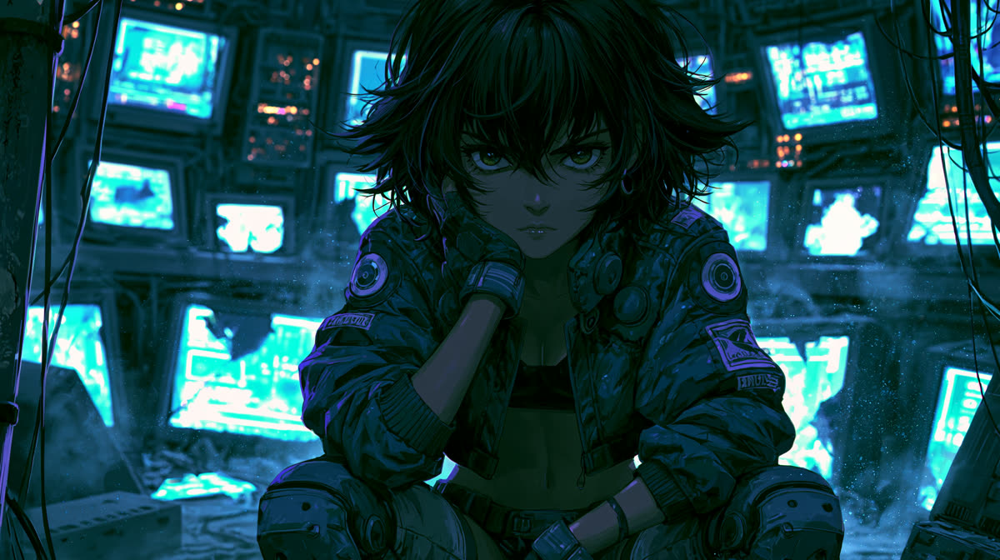
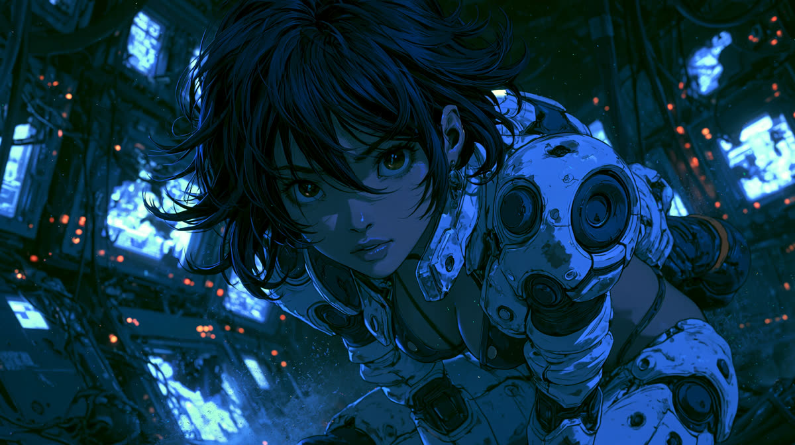
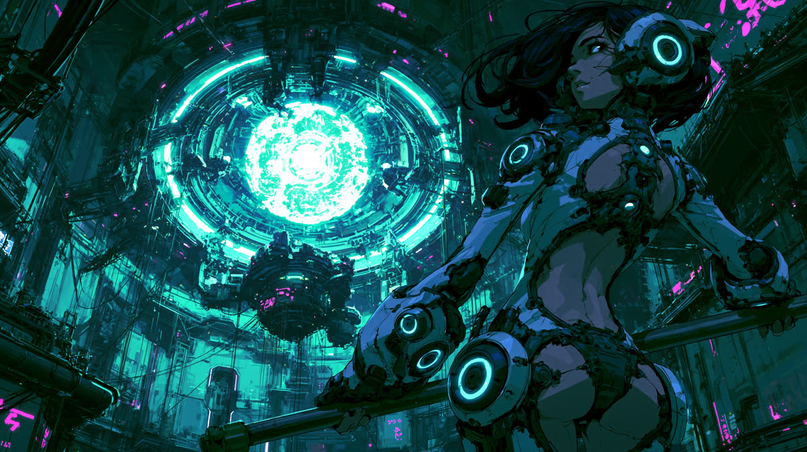
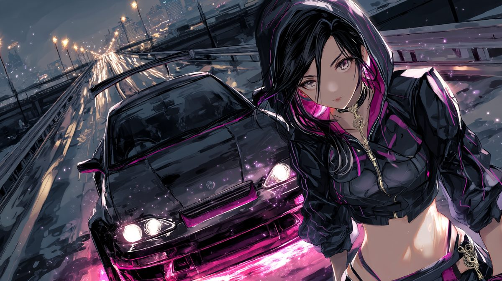
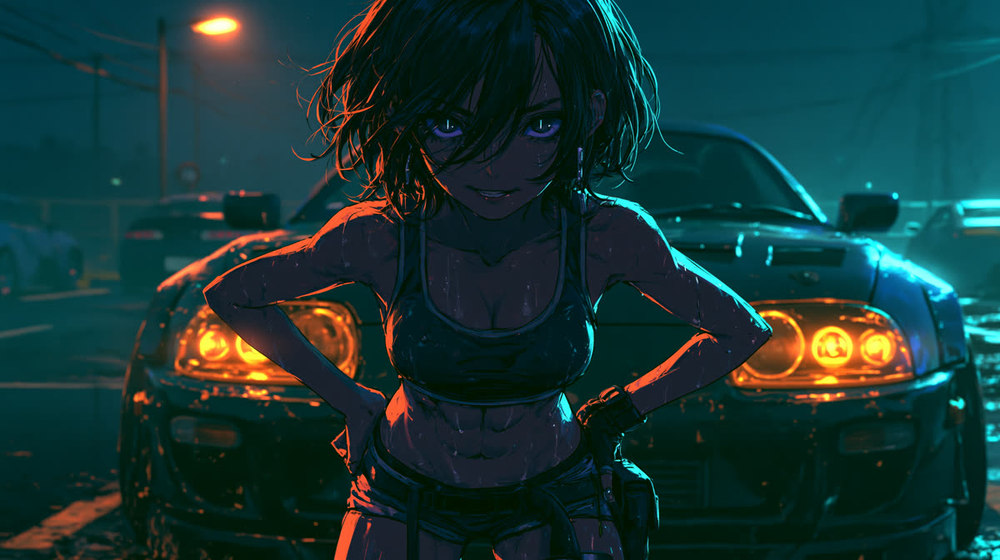
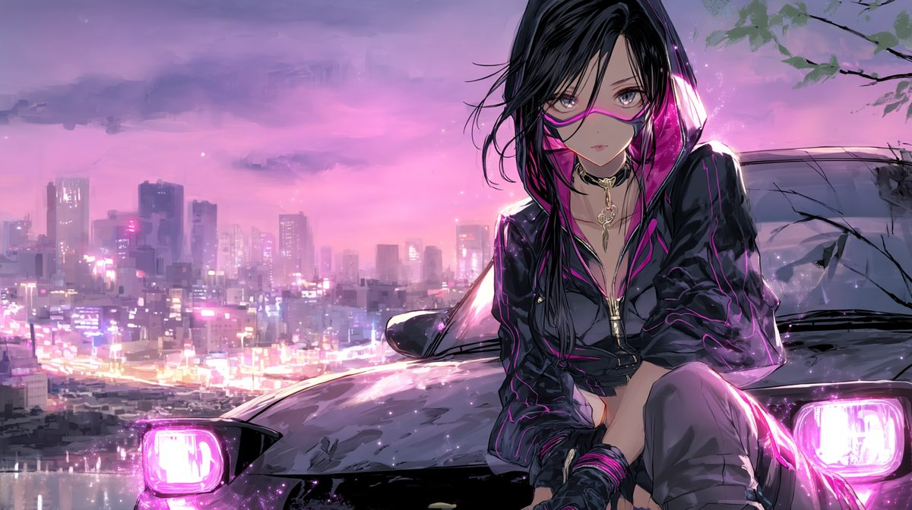
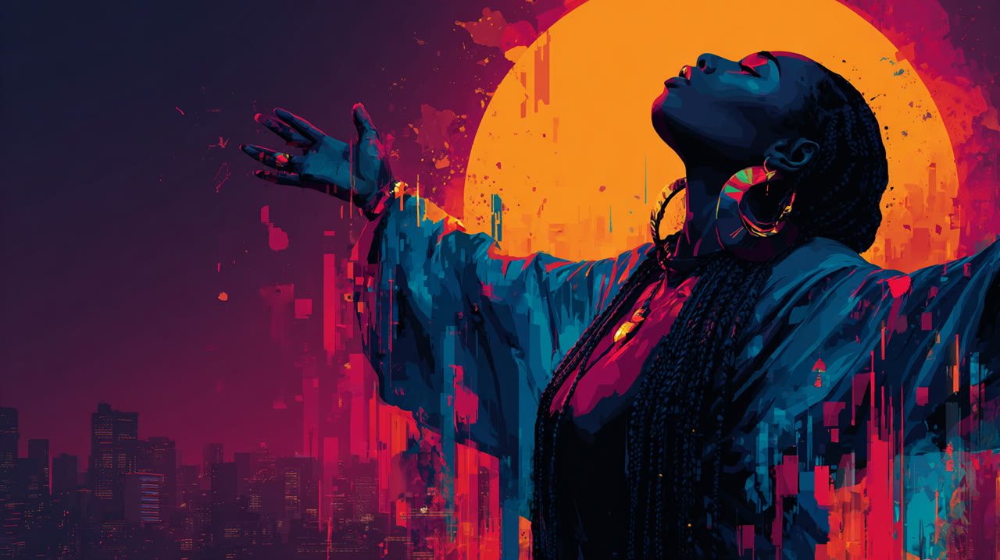
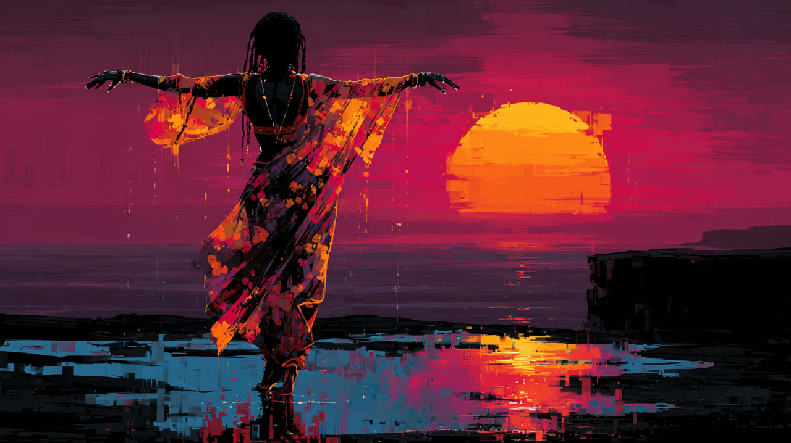
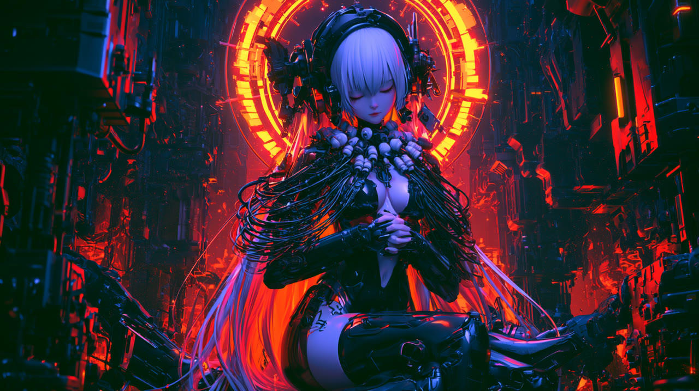
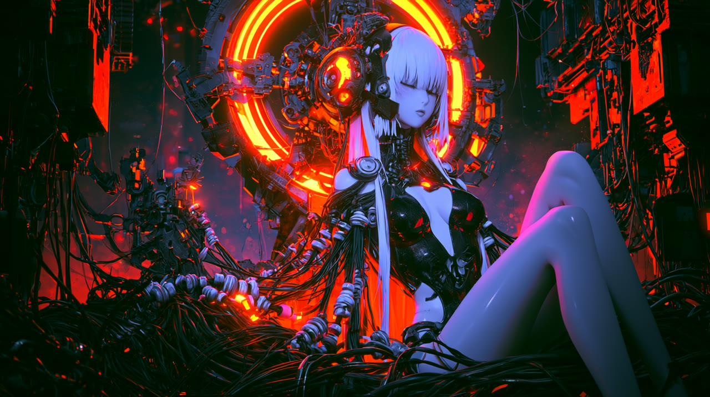
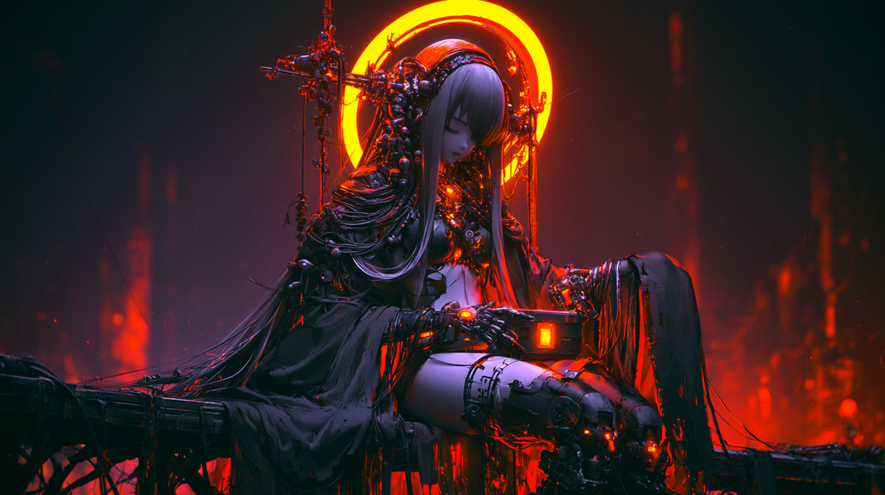
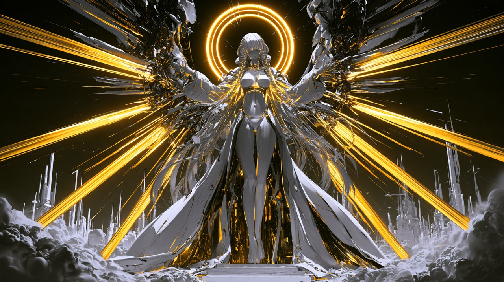
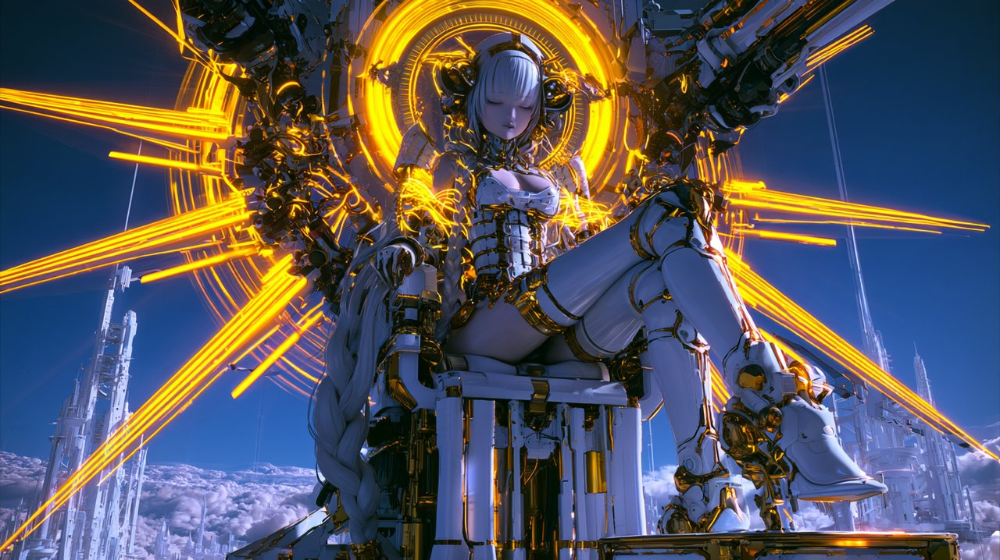
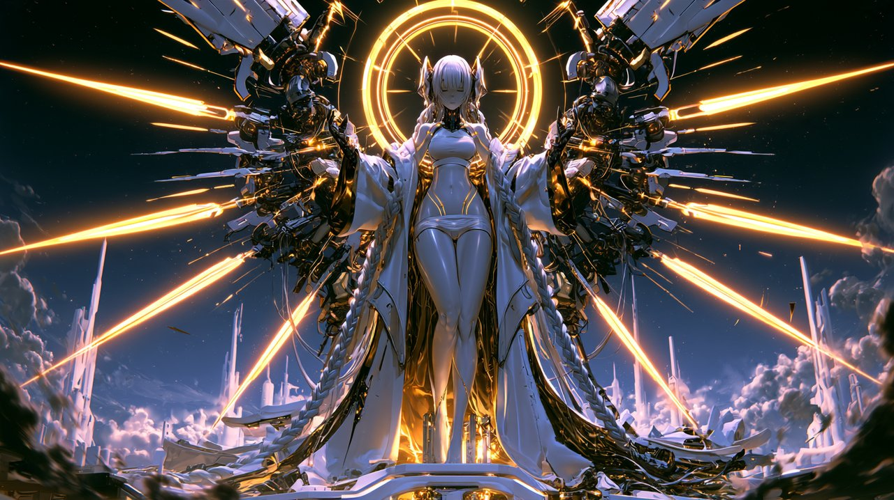
The music on these frequencies is assembled by a machine. That is not fine print — it is the story.
ECHO VERSE is an AI music project: the tracks are generated, curated and mixed into transmissions by an archive system rebuilding memories of a world that went quiet. Every title, every artwork, every signal is part of that fiction — and every video is labeled accordingly.
If a memory that never happened still makes you feel something — then the reconstruction worked.